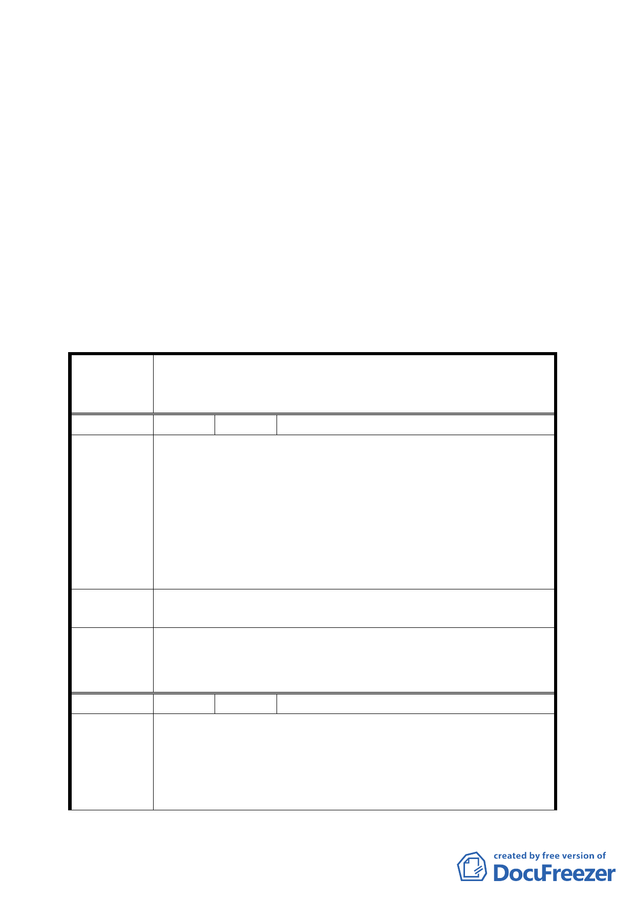

次會議討論。
七、 市 府 都 市 發 展 局 於 95 年 10 月 17 日 以 北 市 都 規 字 第
09535142600 號函送補充說明資料到會。
決議：
一、本案除增列執行緩衝期「內湖第五期重劃區於本計畫公告二
年後實施、其他地區於本計畫公告一年後實施」外，其餘照
案通過。
二、公民團體陳情意見審決如後附綜理表。
決議：
臺北市都市計畫委員會公民或團體所提意見綜理表
修訂「臺北市大同區大稻埕歷史風貌特定專用區細部計畫案」
案 名 內「大稻埕歷史風貌特定專用區容積移轉作業要點第十點」
案
編 號 １ 陳情人 莊子華等 4 人
一、土地標示：內湖區潭美段五小段 112、149 地號。
二、依據「台北市內湖區新里族段羊稠小段附近地區細部計
畫案」，本人土地為住商混合區，最高容積率為 360％，
陳情理由
比較基準容積率 225％，相當於可接受 60％，不宜降低
到 20％。因為當初分配到住商混合區土地負擔較之住宅
區、工商混合區、辦公服務區高很多。其他區分配回 50
％以上，住商區只分回 46％的土地，且土地開發總隊有
協議答應容積可到 360％。
建 議 辦 法 本次要點第十點中應將五期中的住商混合區排除在外。
本案除增列執行緩衝期「內湖第五期重劃區於本計畫公告二
委員會決議 年後實施、其他地區於本計畫公告一年後實施」外，其餘照
案通過。
編 號 2 陳情人 黃文堅等 5 人
一、土地標示：內湖區金泰段。
二、有關基地可接受容積量由最高不得超過原法定容積之 40
陳情理由
％，調降為 20％，擬提出陳情意見。
三、根據該計畫書內容所敘述，該計畫目標藉調降移至大內
科地區之容積總量，以改善大內科地區交通問題之措施
三